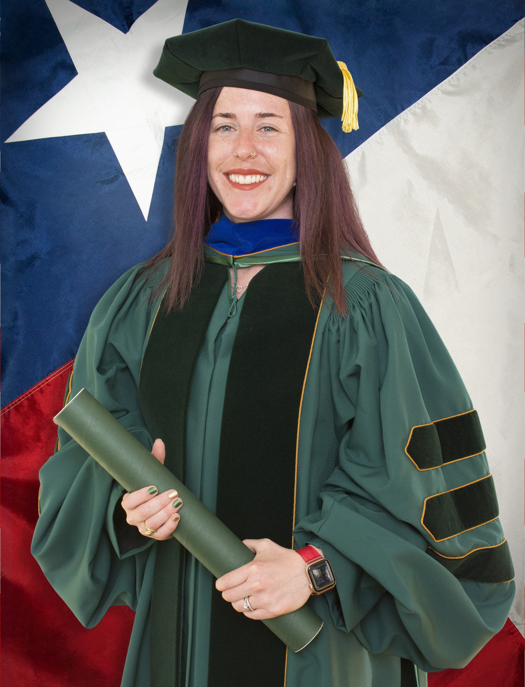

About Me
I am an assistant Professor of Mathematics and Data Analytics at Dickinson College in Carlisle, PA. My research interests include spatial statistics, time series analysis, statistical computing and graphics, and statistics education.